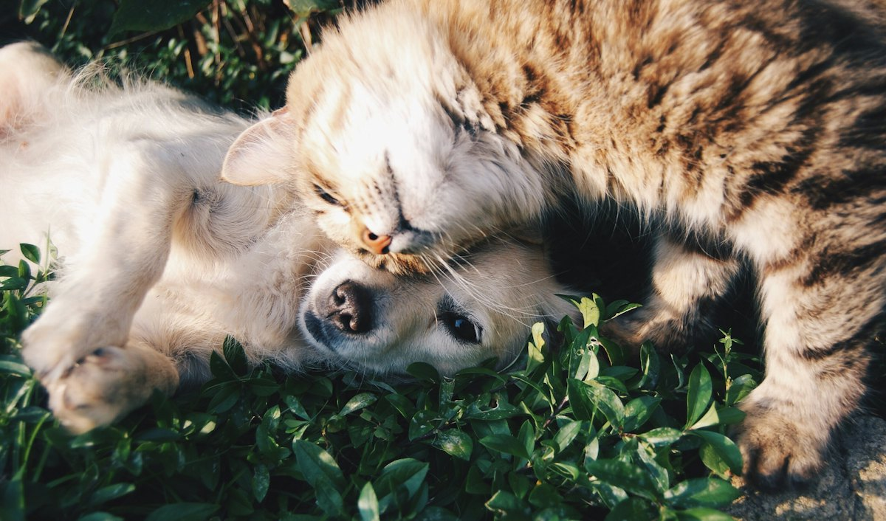

Uma rede inteira procurando com você.
Encontre, divulgue e receba ajuda da comunidade para reencontrar seu pet, informar avistamentos e apoiar adoções responsáveis.


Dados ilustrativos do protótipo. No piloto, os números reais só aparecem quando forem significativos.
Do alerta ao reencontro, em três passos
Sem custo, sem anúncios. A MEL avisa quem está perto e protege os dados de quem pede ajuda.
Publique em 2 minutos
Foto, nome e a região onde o pet sumiu. A MEL gera um cartaz com QR code para imprimir e compartilhar.
A vizinhança é avisada
Guardiões da região recebem o alerta. Quem vê o pet registra o avistamento com foto, mesmo sem conta.
Conversa segura até o reencontro
O contato acontece pelo chat da MEL. Seu telefone e endereço nunca ficam expostos.
Mapa e mural, lado a lado
Mapa da rede
Ver tudoÁreas aproximadas (~250 m) para proteger tutores
Últimos no mural
Abrir muralAinda não achou seu novo amigo? Entre na fila.
Cadastre o que você procura (espécie, porte, idade) mesmo sem animais disponíveis. Quando chegar alguém compatível, a ONG ou o protetor fala com você pela MEL.
- Seu contato fica privado. Só quem cuida do animal vê, e só com o seu consentimento.
- Você cancela o interesse quando quiser, com um toque.
- Cada anúncio passa pela moderação antes de aparecer.
Clínicas, ONGs e protetores que ajudam animais a voltar para casa
Parceiros aparecem no mapa como pontos de apoio: recebem animais encontrados, divulgam alertas e orientam tutores. A MEL não vende nada. A parceria é pela causa.
Empresas e serviços pet
Clínicas, pet shops, banho e tosa, hotéis.
ONGs
Publicam animais para adoção e recebem a fila de interessados.
Protetores independentes
Sem CNPJ e sem burocracia. A moderação valida o perfil.